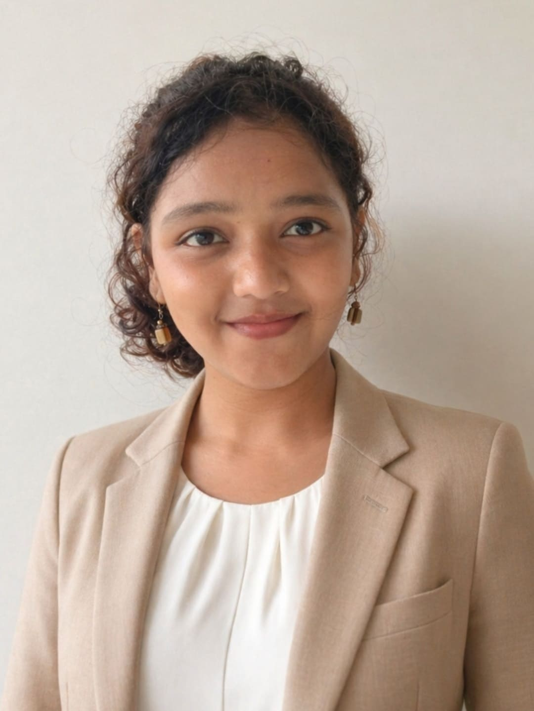

Started My Engineering Journey
Karpagam College of Engineering
Pursued B.E. in Computer Science and Design, building a strong foundation in programming, computer science and software development.
HELLO, I'M
A Computer Science graduate passionate about software development, problem-solving and building meaningful digital experiences.
EXPLORE MY JOURNEY
From learning the fundamentals to building software and beginning my professional career.
Pursued B.E. in Computer Science and Design, building a strong foundation in programming, computer science and software development.

Won first prize and a cash award of ₹5,000 at the Project Expo.

Secured first rank in the 3rd and 4th semesters and presented and published a research paper at an international conference.
Earned certifications in Java, JavaScript, React, CSS, MongoDB, API development and database management.
Certifications include HackerRank, JPMorgan Chase Software Engineering, Amazon Database Management with Java and SQL, MongoDB, Postman API Student Expert and IIT Bombay Java Programming.

Developed a secure online banking system using Spring Boot, Spring Security, Thymeleaf and MySQL, implementing authentication and core banking features.
Optimized data access using Hibernate and Spring Data JPA, improving query efficiency and transaction handling.
Contributed to open-source projects and solved 300+ LeetCode problems, continuously strengthening problem-solving skills.
Completed an Advanced Software Engineering Job Simulation, gaining exposure to industry-oriented engineering practices.
Joined Psiog Digital and began my professional journey, transitioning from academic learning into the software industry.
A little bit of everything, a lot of curiosity. Here's a glimpse into the things I love learning, questioning and exploring.
Fascinated by how the human mind works, how people think and what happens when we start thinking about our own thinking.
One random question can lead to hours of research. I love digging deeper into unusual topics and discovering things I never knew I wanted to know.
Exploring the history, mathematics and meaning behind Tibetan mandalas, Islamic geometric patterns and intricate forms of symmetry.
Learning about feminism, questioning established norms and understanding how history, power and social structures shape the world we live in.
From Carnatic classical and Western classical to indie and everything in between. Good music doesn't need to fit into one genre.
Flip a card. There's a little story on the other side.
A little art, a little music, a lot of experiments and countless ways to turn curiosity into creativity. Here's a glimpse of the things I love doing.